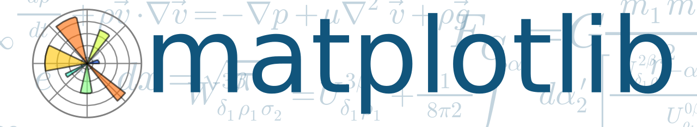
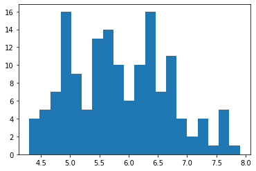
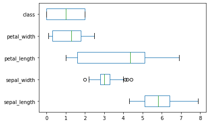
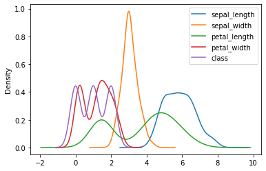
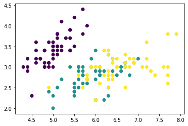
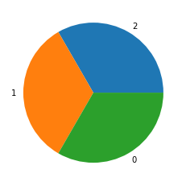
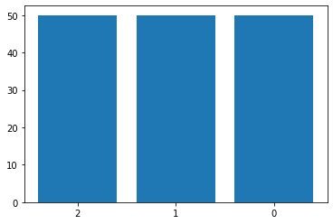
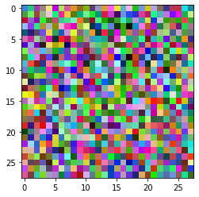
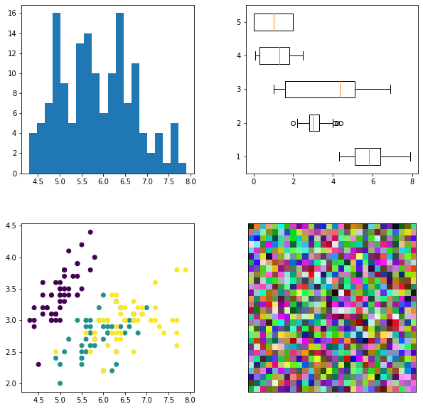

Visualisation de données

À travers ce guide, nous verons quelques fonctions utiles de la librairies Matplotlib pour créer des graphiques de bases.
Matplotlib est une librairie permettant de développer des graphiques simples pour visualiser rapidement ses données.
import matplotlib.pyplot as plt
Afin d'illustrer les exemples, nous allons importer le jeu de données IRIS
import pandas as pd
from sklearn import datasets
iris = datasets.load_iris()
iris_df = pd.DataFrame(iris.data,columns=['sepal_length','sepal_width','petal_length','petal_width'])
iris_df['class'] = iris.target
iris_df.head()
| sepal_length | sepal_width | petal_length | petal_width | class | |
|---|---|---|---|---|---|
| 0 | 5.1 | 3.5 | 1.4 | 0.2 | 0 |
| 1 | 4.9 | 3.0 | 1.4 | 0.2 | 0 |
| 2 | 4.7 | 3.2 | 1.3 | 0.2 | 0 |
| 3 | 4.6 | 3.1 | 1.5 | 0.2 | 0 |
| 4 | 5.0 | 3.6 | 1.4 | 0.2 | 0 |
Graphiques de bases
Matplotlib permet de construire très rapidement des graphiques simples.
D'ailleurs, Pandas intègre certaines fonctions pour les appliquer directement au niveau d'un dataframe Pandas.
Histograme
plt.hist(iris_df.sepal_length, bins = 20)
plt.show()
# Revient au même que :
#iris_df.sepal_length.hist(bins = 20)
#plt.show()

Boxplot
iris_df.plot(kind='box', vert=False)
plt.show()
# Revient prèsque au même que
#plt.boxplot([iris_df.sepal_length, iris_df.sepal_width, iris_df.petal_length, iris_df.petal_width,iris_df['class']],vert=False)
#plt.show()

Graphique de densité
iris_df.plot(kind='kde')
plt.show()

Nuage de points
plt.scatter(iris_df.sepal_length, iris_df.sepal_width, c=iris_df['class'])
plt.show()

Diagramme circulaire
label = iris_df["class"].value_counts().keys().tolist()
valeurs = iris_df["class"].value_counts().values.tolist()
plt.pie(valeurs, labels = label)
plt.show()

Diagramme en bar
label = iris_df["class"].value_counts().keys().tolist()
valeurs = iris_df["class"].value_counts().values.tolist()
plt.bar(np.array(label).astype(str),valeurs)
plt.show()

Afficher une Image
import numpy as np
# On génère une matrice de nombre aléatoire
image_random = np.random.randint(0, 255, 2352).reshape((28,28,3))
plt.imshow(image_random)
plt.show()

Afficher plusieurs graphiques sur une même figure
# Taille de la figure
fig = plt.figure(figsize=(10,10))
# Réglage de l'espacement entre graphiques
plt.gcf().subplots_adjust( wspace = 0.3, hspace = 0.3)
# Graphique 1
plt.subplot(2, 2, 1) # Emplacement du graphique sur la figures
plt.hist(iris_df.sepal_length, bins = 20)
# Graphique 2
plt.subplot(2, 2, 2)
plt.boxplot([iris_df.sepal_length, iris_df.sepal_width, iris_df.petal_length, iris_df.petal_width,iris_df['class']],vert=False)
# Graphique 3
plt.subplot(2, 2, 3)
plt.scatter(iris_df.sepal_length, iris_df.sepal_width, c=iris_df['class'])
# Graphique 4
plt.subplot(2, 2, 4)
img = plt.imshow(np.random.randint(0, 255, 2352).reshape((28,28,3)))
img.axes.get_xaxis().set_visible(False)# Suppression des axes
img.axes.get_yaxis().set_visible(False) # Suppression des axes
# Affichage de la figures
plt.show()
